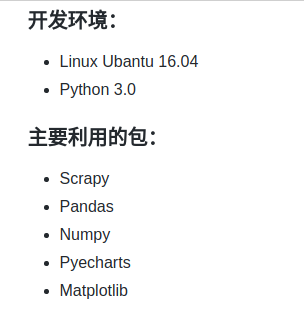
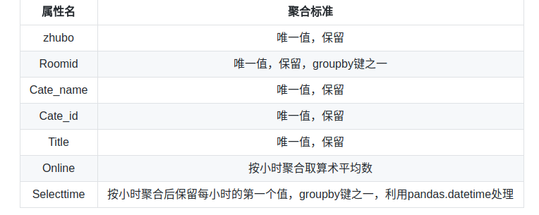
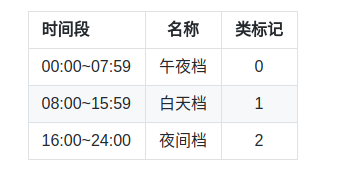
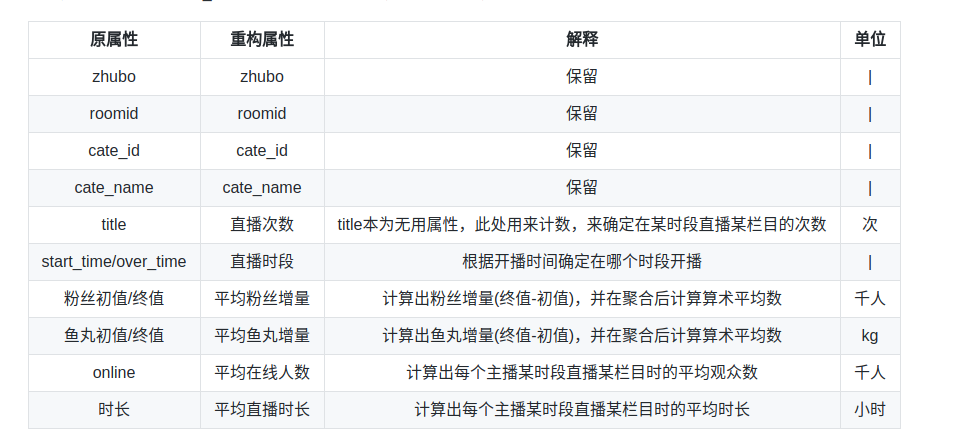
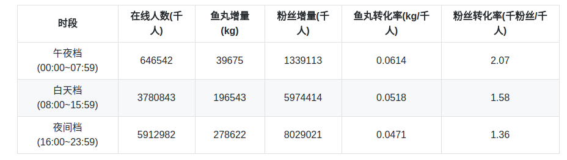
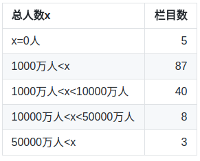

斗鱼tv数据分析项目访问
利用斗鱼tv爬虫抓取的数据进行数据分析,开发环境及主要利用的包如下:

开发环境、包
数据预处理：
(1).缺失值处理
由于十一期间抓取数据时有一次停电，造成有3小时，共6条数据缺失，按照数据的特性此处不宜采用线性插值法进行插值（不能运用lagrange等插值法），故此处采用缺失值当天前后2天缺失值时段的值求取其均值来进行填充。
(2).数据聚合
对斗鱼tv各栏目的分析需要的是各个栏目的指标。因此，对于源数据，需要按照各个主播，聚合成均值。在聚合之前，需要利用键roomid将两张斗鱼数据的表合并。
A.对于斗鱼房间详细信息：
按照开播时间将数据聚合，对于其中的各项属性的聚合标准如下表：
 聚合标准
聚合标准
B.对于斗鱼在播房间明细：
按照每小时将数据聚合,对于其中的各项属性的聚合标准如下表:

聚合标准
C.将房间详细信息与在播房间明细合并：
1、zhubo、roomid、cate_name、cate_id、title作为单次直播中的唯一值直接保留；
2、以房间详细信息的开播、下播时间为基准作为主播的1次直播，并将该时段内的房间明细表中的online数据再次聚合，返回算术平均数；
3、对于fans_num（粉丝数）与owner_weight（鱼丸体重），分别记录开播与下播时的值作为本次直播的初值与终值；
4、用下播时间减去开播时间，计算出本次直播的直播时长。
将两张表合并成一张表。该表结构如下图：
 聚合数据合并
聚合数据合并
属性重构：
经过数据预处理后，斗鱼在播房间明细与斗鱼房间详细信息两张表已合并为1张表。由于主播一天内可能会直播几次，而每天的开播时间不等，不便进一步分析，故需要构造便于分析的新属性。 首先，定义直播的时段，将一天内的直播按照主播的开播时间分为三个时段：

时段
然后，去除表中开播时间中的日期，仅保留时间。依据开播时间，将主播的开播/下播时间归纳为时段（午夜档、白天档、夜间档），再以roomid、cate_id、时段为键聚合源数据，构造新属性，作为后续分析的专家数据。

专家数据集
数据分析：
1.斗鱼tv/熊猫tv日均在线人数对比
取每3小时在线总人数的平均数作为分析指标

从图中可以看出斗鱼tv在十一节前后全天时段在线人数均高于熊猫tv。如果api内数据没有人数虚高的问题，那么斗鱼tv的人气是完全高于熊猫tv的。
2.斗鱼tv时段重要性分析
以3个时段为基准，聚合专家数据集，分别输出在线人数、粉丝增量、鱼丸增量的均值。
 分时段在线人数
分时段在线人数
 分时段粉丝增量
分时段粉丝增量


分时段信息
在线人数、鱼丸增量、粉丝增量是衡量直播平台火爆程度的关键指标。在线人数是当前直播平台的活跃用户数量。粉丝增量反应出活跃用户与主播之间的互动程度， 互动程度越高则用户对平台的使用粘性也会提高。鱼丸增量则反应出了用户在平台上的消费程度（当然鱼丸现在主要是作为免费礼物存在，由于无法抓取到鱼翅礼物 的数据，这里还是采用鱼丸来作为用户消费水平的指标）。
从图中可以看出。午夜档、白天档与夜间档，在在线人数、鱼丸增量、粉丝增量三个方面都是：夜间档>白天档>午夜档的关系。这也很好解释，在16:00~23:59这个 时间段内上班族与学生都处于休息时段，观看人数也最多，全天在线人数的比例达到了57.13%，鱼丸增量与粉丝增量的占比也是全天最大，但是在这个时段的鱼丸转化率与粉丝转化率却是全天最低的。这是由于晚间档的用户基数最大，但是深度用户占比不大造成的。
鱼丸转化率与粉丝转化率的情况与在线人数、鱼丸增量及粉丝增量的情况正好相反，三个时段之间的关系是：午夜档>白天档>夜间档。
由此也可以看出，在午夜档深度用户的比重最大，白天档次之，夜间档最少。三个时段中夜间档的休闲用户最多，用户基数最大。因此，也应该投入更多的平台资源在夜间档这个时段，有更大的可能性加大休闲用户的使用程度，增大用户粘性，增加深度用户数量。从而在全天三个时段提升深度用户的总量，达到提升粉丝转化率与鱼丸转化率的目的。
3.斗鱼tv各栏目火爆程度分析
首先看一张斗鱼所有在博栏目组成的词云图
 栏目词云图
栏目词云图
词云图是依据各栏目的总在线人数(各主播播放某栏目时的平均在线人数×直播次数×平均直播时间的和)绘制。栏目名的字体大小直接反应出了栏目在线人数的火爆程度。 栏目总人数情况如下：

栏目总人数
 2-8原则
2-8原则
可以看出，播出栏目的在线人数是基本符合2/8原则的。按降序排列总人数后，前6个项目的总人数和就已达到了全部栏目总人数和的80% ，828028.8万人。
(1).斗鱼十大人气栏目分析
定义：主播人气 = 平均在线人数×平均直播时长×直播次数 栏目分时段人气就是分时段按照栏目将专家主播数据聚合
将聚合后的数据作图为3D柱状图如下：
 10大人气栏目
10大人气栏目
从图中看出，平台上大多数的在线用户是：绝地求生、英雄联盟、王者联盟 这三个栏目的忠实观众，显然这也是斗鱼TV的三大支柱栏目。此外，可以很直观的看出，在线人数夜间档>白天档>午夜档。
但也可以看到，除了10个人气最高的栏目之外，其他所有栏目的人气总和的量不容忽视，因此，多元化发展平台的直播栏目仍然是十分有意义的，可以大量的增加平台活跃用户的数量。
综上，平台采取重点培养高人气栏目，同时扩展其他人气一般的栏目是最科学的运营模式。
(2).斗鱼十大最吸鱼丸栏目分析
定义：鱼丸时段增量 = 平均鱼丸增量×平均直播时长×直播次数 那么栏目分时段人气就是分时段按照栏目将专家主播数据聚合
将聚合后的数据作图为3D柱状图如下：
 10大吸鱼丸栏目
10大吸鱼丸栏目
鱼丸增量的基本趋势与人气一致，但比较有意思的一点是，可以看到非游戏类的栏目（视听点评、户外等）会出现白天档的鱼丸增量最多的情况，这也说明观看这类栏目的用户的活跃时段白天档比夜间档要多，对于这类栏目，平台可以将更多的资源投入到白天档中。另外一点与人气不同的是，人气出现了支柱栏目的情况（领头的三个栏目人气值很高，占了一半以上），鱼丸增量在各栏目上较人气分布更加均匀，从侧面反应了其他栏目中的硬核用户比例较之高人气项目更高。这更加说明了平台在栏目选择上应该尽量拓展栏目的类别，增加受众，这样可以有效的提高平台收入。
(3).斗鱼十大吸粉栏目分析
定义:粉丝时段增量= 平均粉丝增量×平均直播时长×直播次数 那么栏目分时段人气就是分时段按照栏目将专家主播数据聚合
将聚合后的数据作图为3D柱状图如下：
 10大吸粉丝栏目
10大吸粉丝栏目
粉丝时段增量的大体趋势也与在线人数相似，但在非游戏类栏目上的表现与鱼丸增量类似，会有白天档>夜间档的情况出现，再次印证了非游戏类栏目的活跃观众主要观看时间集中在白天档。粉丝增量在分布上较鱼丸增量更加平均，再次说明增量栏目类别能够有效的延长用户使用时间，增加活跃用户数量，提高平台使用率。
绝地求生作为新兴的火爆游戏，同时也是直播平台的主推项目，在在线人数、鱼丸增量、粉丝增量三个方面的表现也不出所料的碾压了其他栏目。这也体现出了平台的资源对于栏目倾斜的作用。
这次数据分析项目是对我自学python数据分析的一次检验，会有许多不足的地方。
直播行业的竞争现在日渐激烈。且各平台都有海量的数据库可用于数据分析与机器学习建模，根据数据提取出来的经营意见往往更加令人信服，据此做出的决策风险也更小，对平台经营有很大帮助。
本次分析受限于数据获取渠道的原因，能够分析的属性栏目有限，如果能够获取到鱼翅礼物信息、平台活动信息等数据，可以做出更加有说服力的分析。日后如有机会再进行更进一步的分析。
2017年10月-2017年11月